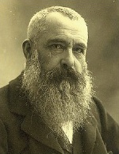

Claude Monet (1840-1926), izlenimci akımın merkezinde yer alan şahsiyetlerden biriydi. Fransa, Giverny’deki bahçesindeki su zambaklarını tasvir ettiği birçok resmiyle tanınır.
Paris’te doğan Monet, Normandiya kıyılarında Le Havre’a beş yaşında taşınmıştı. Doğaya ve denize erken yaştaki yakınlığı, sanatsal kariyerini derinden etkiledi. Monet, hemen sonrasında açık hava manzara ressamı Eugene Bodin’in dikkatini çekerek karikatürle biraz yerel bir şöhret kazandı. 1862’de Cezayir’de yaptığı iki yıllık askerî görevden sonra, Monet kariyerini ressam olarak sürdürmek için ailesinden izin aldı ve Paris’e taşındı. Orada Hollandalı manzara ressamı Johann Barthold kadar gelecekteki izlenimcilerden Auguste Renoir ve Alfred Sisley ile tanıştığı, Charles Gleyre’nin stüdyosunda çalıştı.

1865, 1866 ve 1868’de Monet, resmî Salon’da eserlerini sergiledi. Ancak 1860 sonlarıyla beraber, onu sonunda izlenimciliğe götüren yeni teknikleri keşfediyordu. Örneğin 1869’da o ve Renoir, birlikte popüler bir kayık gezintisi mekânı olan La Grenouilliere’de resim yaptılar. Yan yana çalışırlarken her iki sanatçı da suyun yansımasında ışık ve rengin kısa ömürlü özelliğini yakalamak için parçalı fırça metodunu kullandılar.
1870’de Monet, Camille Doncieux ile evlendi ve Fransa-Prusya savaşından kaçmak için Londra’ya taşındı. Orada geçirdiği dokuz ay boyunca Thames Nehri’nin sayısız resmini yaptı ve gelecekteki resim alıcısı Paul Durand-Ruel ile tanıştı. 1872’de Monet sonraki altı yılını yaşadığı Paris yakınındaki Argenteuil’e geri döndü. İki yıl sonra, akıma adını veren İzlenimcilik: Gündoğumu (1872) resmini sunduğu ilk empresyonist sergisi arkasındaki ana güçtü.
1883’te Monet, yaşamının sonraki yıllarında pek çok resmini yapmasıyla ünlenen, bahçesini kendi tasarladığı Paris’in kuzeydoğusundaki Giverny’e taşındı.
Monet, Giverny’den Londra’ya, Venedik’e ve Rouen’e yoğun şekilde seyahat etmeye devam etti. 1890’larda Monet, günün farklı zamanlarında göründüğü şekilde tek bir cismi tasvir ettiği çeşitli resim dizilerinin (bir saman yığını, bir katedral, kavakların bir görüntüsü) üzerinde çalışmaya başladı. Dizilere kendini verdiğinde, Monet her birine bir saatten az zaman ayırarak aynı esnada sekiz resim üzerinde çalışırdı.
Ölümünden sonraki yıllarda Monet’nin etkisi ve popülaritesi muazzam şekilde arttı. 2004’te Londra’daki Parlamento Binası’nın resimlerinden biri, yirmi milyon dolardan fazla bir paraya satıldı. Binlerce turist, her yıl Giverny’deki bahçesine ve evine akın etmektedirler. Monet’nin eserleri, dünya genelindeki büyük müzelerde, en önemlisi de Paris’teki Marmottan Müzesi ve Orangerie’de asılıdır.
EK BİLGİ:
1. Monet bir zamanlar, kör doğmuş olmayı ve sonra birden gözünün açılmasını istediğini, çünkü önceden bildiği görüşler olmaksızın nasıl görebileceğini merak ettiğini söylemişti.